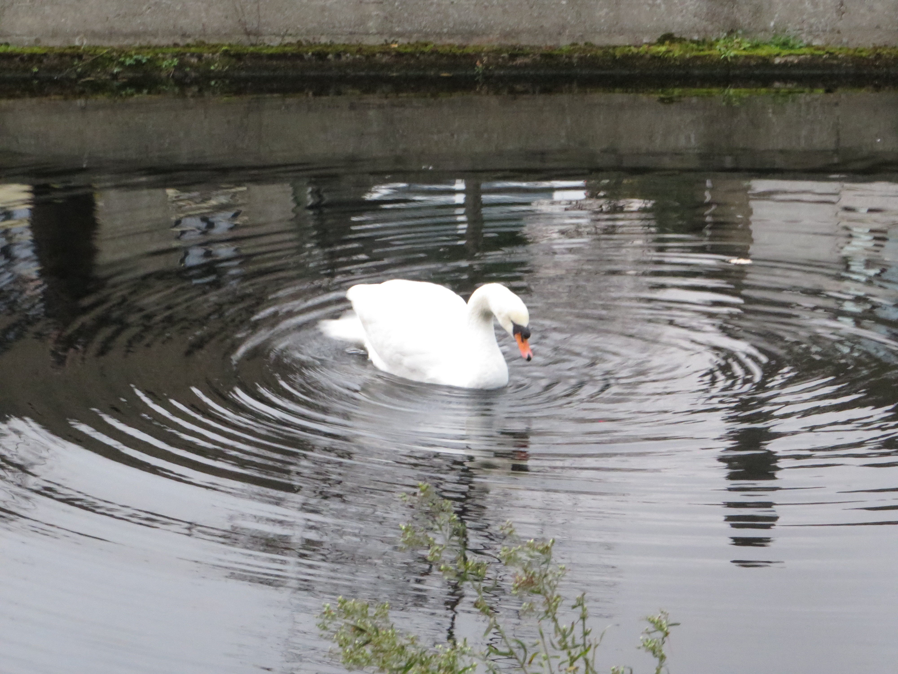
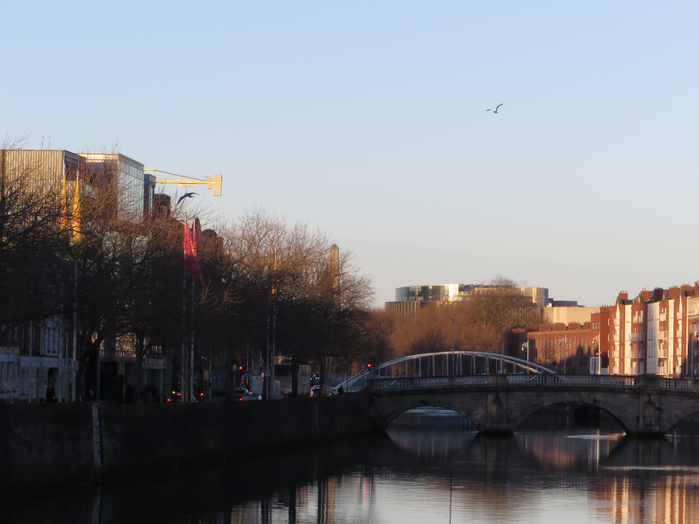
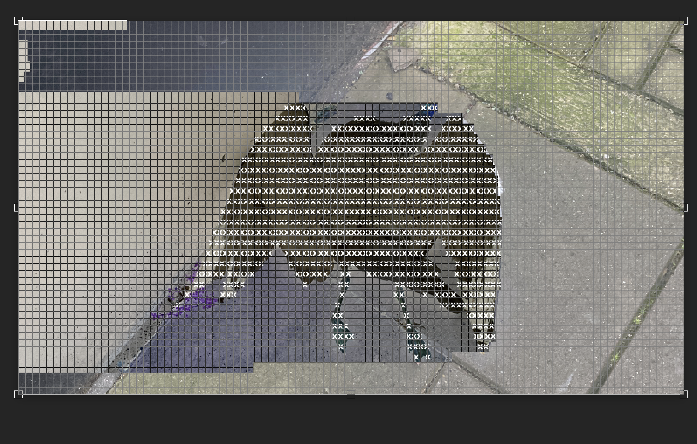
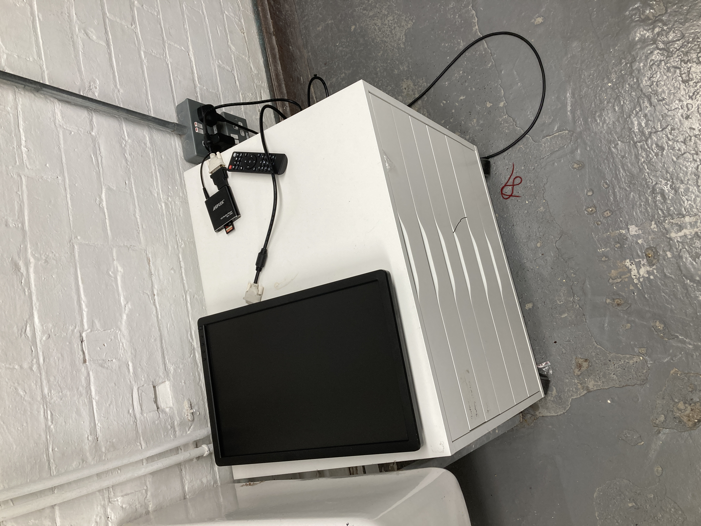
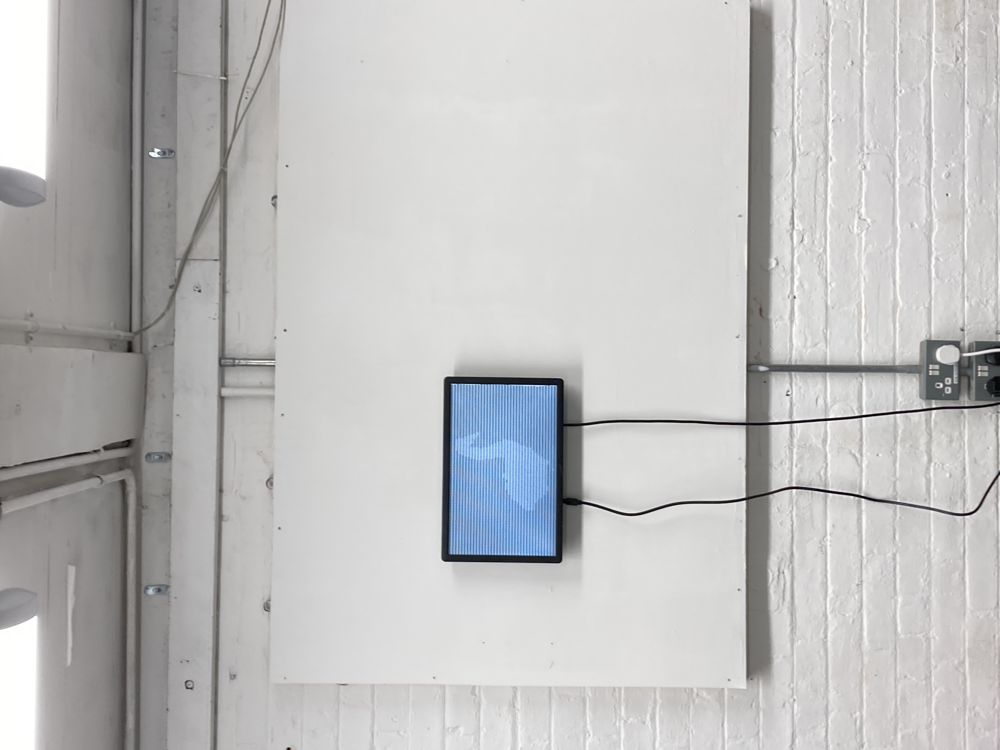
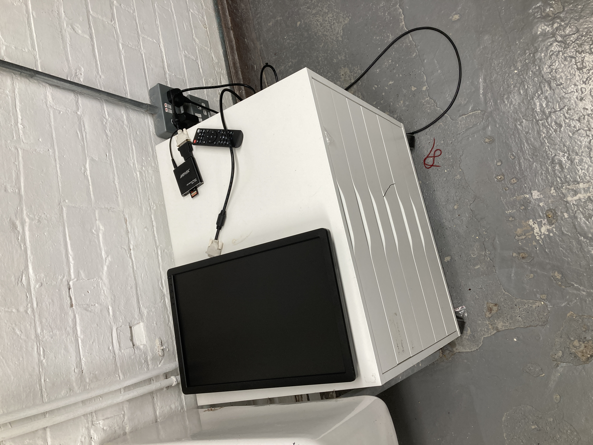
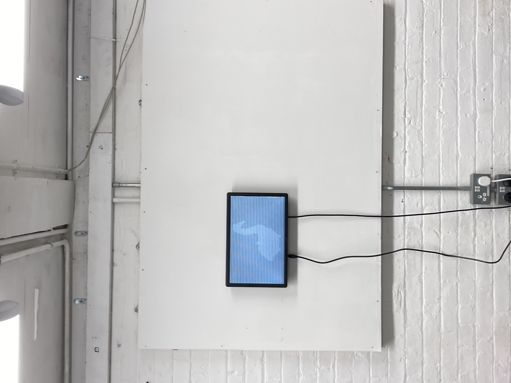

the data_vision project situates the viewer inside the eyes of a machine. What does a computer see? Will a computer look at nature and animals the same way we as humans do? The project involved using real photography and video footage and transforming them frame by frame into text. The process of creating the moving images itself became a machine like process of repitition and data, turning me into a computer.
   



this work was shown alongside the "bitmapping" work in the "Two Channels" exhibition.
return